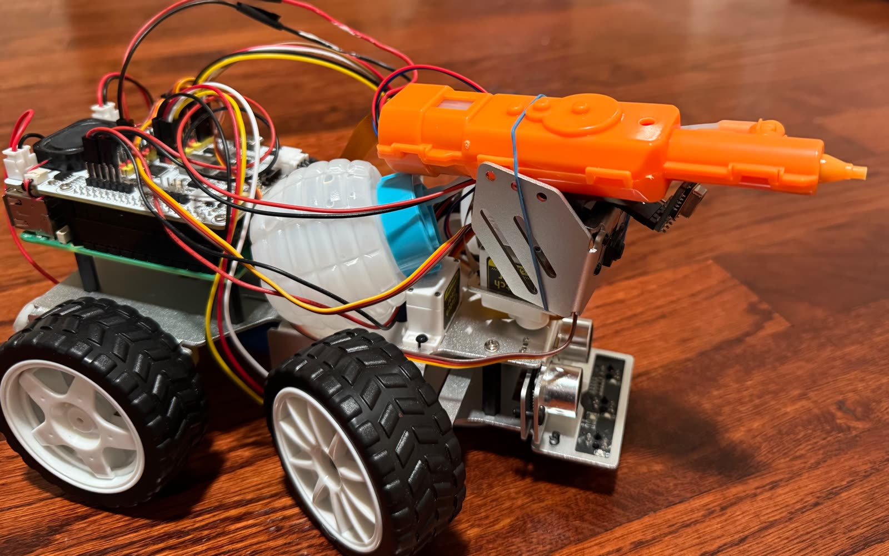
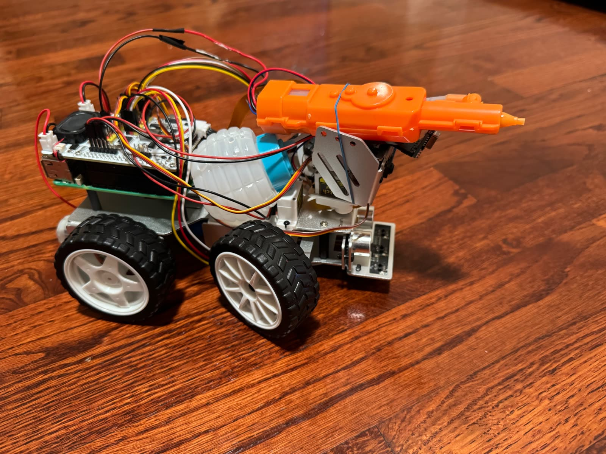
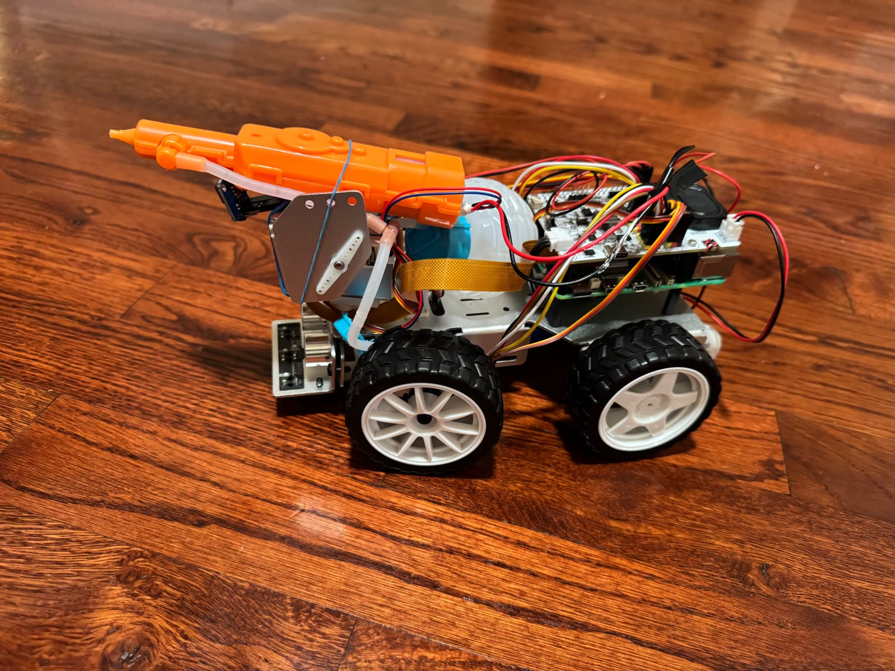
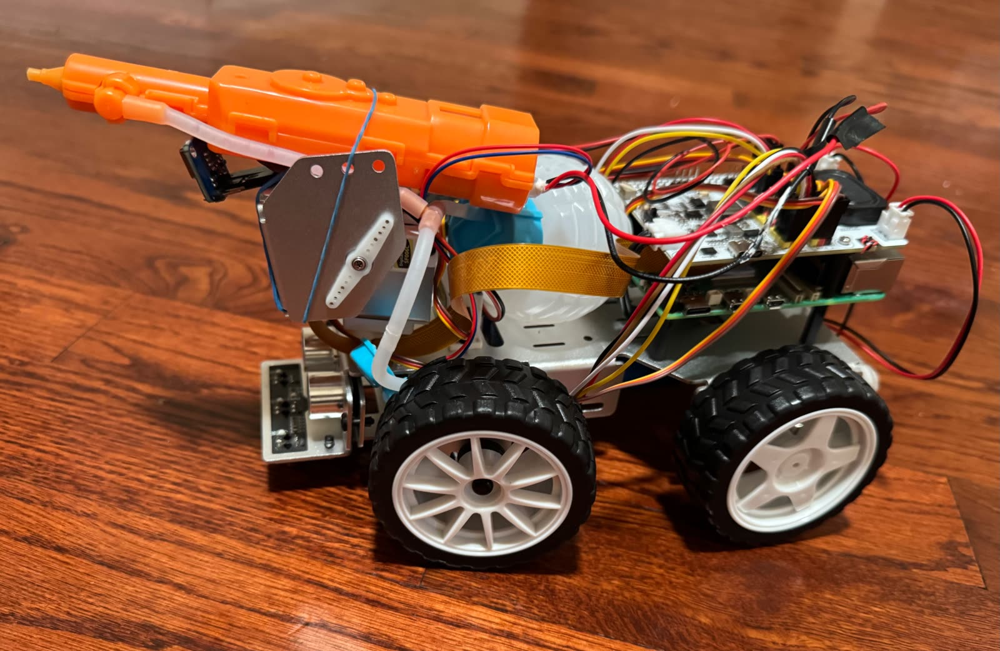

Self-study
“What If”, MAKE magazine, and information about sensors and autonomous vehicles.
Science fair projects, 10 hours/week, 17 weeks/year, from 2018 to present.
A functional prototype of a self-directed fire detection and suppression robotic platform that moves, senses, and extinguishes fire in rough terrain. I was the concept creator on this one, start to finish. The embedded sensor fusion framework leverages YOLOv8 object recognition, and I engineered heat-resistant structural shielding to keep the system running within active flame zones. I also integrated machine learning routines for independent pathfinding and decision-making during suppression tasks.




I calculated power budgets to balance suppression hardware demands alongside emergency communication payloads, evaluated lightweight, high-potency fire retardants for payload efficiency, and analyzed the resource constraints emergency responders face during severe wildfire outbreaks. The mechatronic and software architecture is scalable and adaptable for structural safety audits and wildfire risk analysis.
Read the full ISEF project write-up →
View the ISEF 2026 poster (PDF) →
A software-based project comparing two Convolutional Neural Network (CNN) architectures for classifying road signs, to explore safer autonomous driving.
I identified that VGG-16 likely overfit, since its 138 million parameters exceeded what the dataset needed. I also verified that both models held similar testing performance, which indicates good generalization overall.
A multimodal sensor fusion project investigating whether one accurate sensor outperforms combined sensors in autonomous vehicles, built to precisely locate objects in the field of view by combining three sensing methods into one confirmed reading.
LiDAR measured reflected laser pulses for precise object maps, ultrasonic sensors measured reflected sound waves, and infrared sensors detected objects well even in direct sunlight. I built a test bed to calibrate the XY location of an obstacle and triangulate its position using all three readings together.
I researched self-driving cars for existing deficiencies and developed a test to understand the accuracy of the HC-SR04 ultrasonic sensor, investigating how temperature, materials, and environmental conditions affect its readings. I tested cotton, sponge, wood, sandpaper, heat, humidity, wind, and sound interference. Cotton clearly prevented detection, and acoustic tests became inaccurate beyond 70 centimeters. Most other conditions only minimally affected readings, suggesting stronger external factors were required.
My first engineering project, entered as a middle schooler, placed 1st in Physics at the Santa Cruz County Science Fair. I built a 16-gram basic quadcopter from motors and popsicle sticks to test payload capacity at different voltages, adding 1 to 7 gram payloads and measuring five-second flight heights across four trials. Adding 9V increased flight height but produced greater variability than six volts, and I concluded that drones could only carry less than half their weight.
“What If”, MAKE magazine, and information about sensors and autonomous vehicles.
Online research on motion sensors, software, and AI.
Creating and developing original concepts, and relentlessly prototyping and testing mechatronic assemblies.
Scanning the surrounding environment for unsolved engineering challenges.
Learning from experts, science fair judges, and competition feedback.